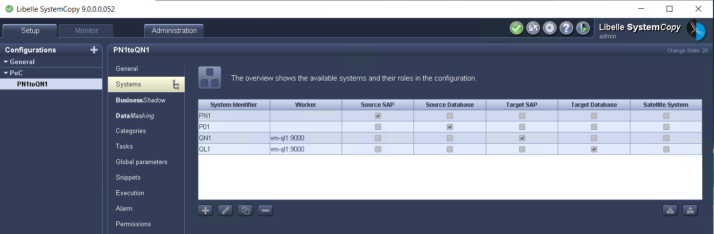
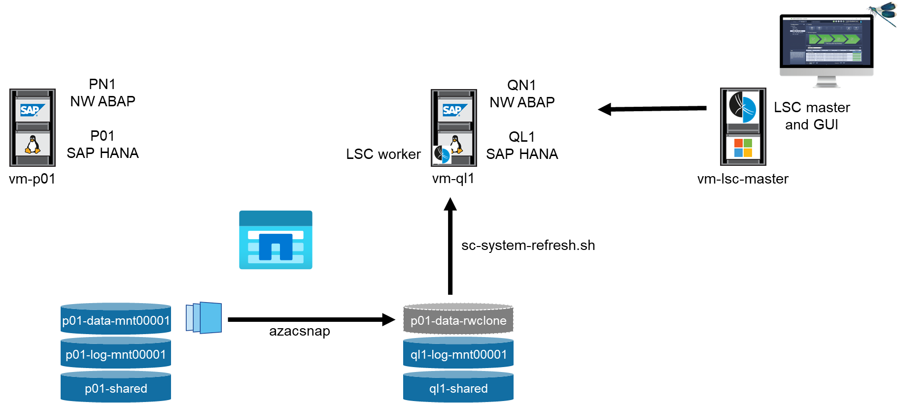
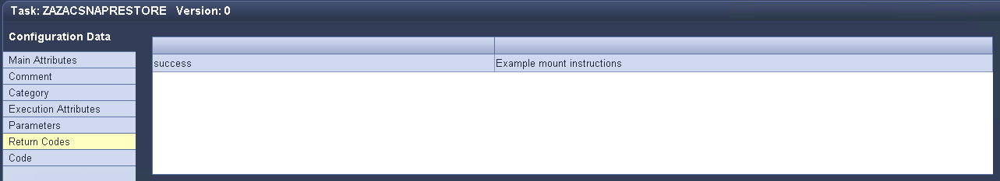
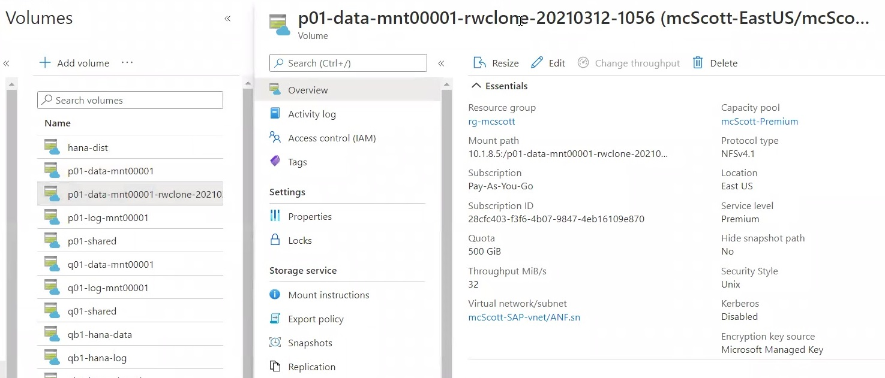
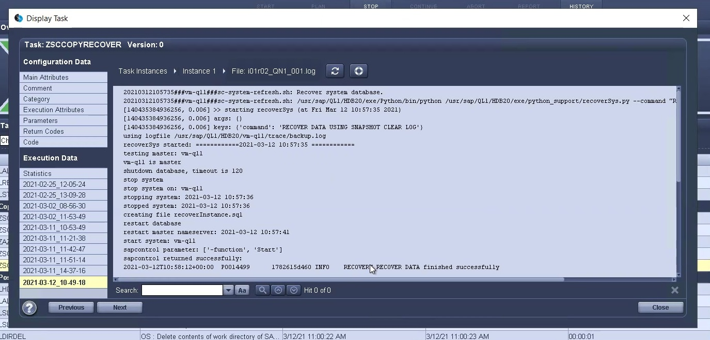

Mejores prácticas
Mejores prácticas
Actualización del sistema SAP HANA con LSC, AzAcSnap y Azure NetApp Files
 Sugerir cambios
Sugerir cambios
Uso "Azure NetApp Files para SAP HANA", Oracle y DB2 en Azure proporcionan a sus clientes las funciones avanzadas de gestión y protección de datos de ONTAP de NetApp el servicio nativo de Microsoft Azure NetApp Files. "AzAcSnap" Es la base para unas operaciones de actualización del sistema SAP muy rápidas que permiten crear copias Snapshot de NetApp coherentes con las aplicaciones de sistemas SAP HANA y Oracle. (En la actualidad, AzAcSnap no es compatible con DB2).
Los backups de copias snapshot, que se crean bajo demanda o de forma regular como parte de la estrategia de backup, pueden clonarse de forma eficiente en nuevos volúmenes y utilizarse para actualizar rápidamente los sistemas de destino. AzAcSnap proporciona los flujos de trabajo necesarios para crear backups y clonarlos en volúmenes nuevos, mientras que Libelle SystemCopy realiza los pasos de procesamiento previos y posteriores necesarios para una actualización completa del sistema completa.
En este capítulo, describimos una actualización automatizada del sistema SAP mediante AzAcSnap y Libelle SystemCopy con SAP HANA como base de datos subyacente. Como AzAcSnap también está disponible para Oracle, también se puede implementar el mismo procedimiento con AzAcSnap para Oracle. AzAcSnap puede admitir otras bases de datos en el futuro, lo que permitiría realizar operaciones de copia del sistema para esas bases de datos con LSC y AzAcSnap.
En la siguiente figura se muestra un flujo de trabajo típico de alto nivel del ciclo de vida de la actualización de un sistema SAP con AzAcSnap y LSC:
-
Una instalación y preparación iniciales del sistema de destino única.
-
Operaciones de procesamiento previo en SAP realizadas por LSC.
-
Restaurar (o clonar) una copia Snapshot existente del sistema de origen en el sistema de destino realizado por AzAcSnap.
-
Operaciones de postprocesamiento SAP realizadas por LSC.
El sistema se puede utilizar como prueba o sistema de control de calidad. Cuando se solicita una nueva actualización del sistema, el flujo de trabajo se reinicia con el paso 2. Todos los volúmenes clonados restantes se deben eliminar manualmente.

Requisitos previos y limitaciones
Deben cumplirse los siguientes requisitos previos.
AzAcSnap instalado y configurado para la base de datos de origen
En general, hay dos opciones de implementación para AzAcSnap, como se muestra en la siguiente imagen.

AzAcSnap se puede instalar y ejecutar en un equipo virtual central de Linux para el que todos los archivos de configuración de la base de datos se almacenan de forma centralizada y AzAcSnap tiene acceso a todas las bases de datos (a través del cliente hdbsql) y a las claves de almacenamiento de usuarios HANA configuradas para todas estas bases de datos. Con una implementación descentralizada, AzAcSnap se instala individualmente en cada host de base de datos donde normalmente sólo se almacena la configuración de la base de datos local. Ambas opciones de implementación son compatibles con la integración de LSC. No obstante, seguimos un enfoque híbrido en la configuración de laboratorio de este documento. AzAcSnap se instaló en un recurso compartido de NFS central junto con todos los archivos de configuración de DB. Este recurso compartido de instalación central se montó en todas las máquinas virtuales en /mnt/software/AZACSNAP/snapshot-tool. La ejecución de la herramienta se llevó a cabo localmente en los equipos virtuales de la base de datos.
Libelle SystemCopy instalado y configurado para el sistema SAP de origen y destino
Las implementaciones de Libelle SystemCopy constan de los siguientes componentes:

-
LSC Master. como su nombre indica, este es el componente maestro que controla el flujo de trabajo automático de una copia de sistema basada en Libelle.
-
Trabajador LSC. un trabajador LSC normalmente se ejecuta en el sistema SAP de destino y ejecuta los scripts necesarios para la copia automática del sistema.
-
LSC Satellite. un satélite LSC se ejecuta en un sistema de terceros en el que deben ejecutarse más guiones. El maestro de LSC también puede cumplir el papel de un sistema de satélites LSC.
La GUI Libelle SystemCopy (LSC) debe estar instalada en una VM adecuada. En esta configuración de laboratorio, la GUI de LSC se instaló en una VM de Windows independiente, pero también puede ejecutarse en el host de DB junto con el trabajador de LSC. El trabajador de LSC debe estar instalado al menos en la VM de la base de datos de destino. En función de la opción de implementación de AzAcSnap elegida, es posible que se necesiten instalaciones de trabajo LSC adicionales. Debe tener una instalación de un trabajador de LSC en la máquina virtual donde se ejecute AzAcSnap.
Una vez instalado el LSC, la configuración básica de la base de datos de origen y destino debe realizarse de acuerdo con las directrices del LSC. Las siguientes imágenes muestran la configuración del entorno de laboratorio para este documento. Consulte la siguiente sección para obtener detalles sobre el origen y los sistemas SAP de destino.

También debe configurar una lista de tareas estándar adecuada para los sistemas SAP. Para obtener más detalles acerca de la instalación y configuración del LSC, consulte el manual de usuario del LSC que forma parte del paquete de instalación del LSC.
Limitaciones conocidas
La integración de AzAcSnap y LSC que se describe aquí solo funciona con bases de datos de un solo host SAP HANA. También se pueden admitir las puestas en marcha de varios hosts (o escalado horizontal) de SAP HANA, pero dichas puestas en marcha requieren unos pocos ajustes o mejoras en las tareas personalizadas de LSC para la fase de copia y los scripts correspondientes. Estas mejoras no se tratan en este documento.
La integración de actualizaciones del sistema SAP utiliza siempre la copia Snapshot más reciente del sistema de origen para realizar la actualización del sistema de destino. Si desea utilizar otras copias snapshot más antiguas, la lógica correspondiente en la ZAZACSNAPRESTORE se debe ajustar la tarea personalizada. Este proceso no está incluido en este documento.
Configuración de laboratorio
La configuración de laboratorio está compuesta por un sistema SAP de origen y un sistema SAP de destino, ambos ejecutándose en bases de datos de un solo host SAP HANA.
La siguiente imagen muestra la configuración del laboratorio.

Contiene los siguientes sistemas, versiones de software y volúmenes Azure NetApp Files:
-
P01. BASE DE DATOS SAP HANA 2.0 SP5. Base de datos de origen, host único, inquilino de usuario único.
-
PN1. SAP NETWEAVER ABAP 7.51. Sistema SAP de origen.
-
vm-p01. SLES 15 SP2 con AzAcSnap instalado. VM de origen que aloja P01 y PN1.
-
QL1. BASE DE DATOS SAP HANA 2.0 SP5. Actualización del sistema base de datos de destino, host único y inquilino de un solo usuario.
-
QN1. SAP NETWEAVER ABAP 7.51. Actualización del sistema SAP de destino.
-
vm-ql1. SLES 15 SP2 con trabajador LSC instalado. VM de destino que aloja QL1 y QN1.
-
LSC MASTER versión 9.0.0.0.052.
-
vm- lsc-master. Windows Server 2016. Aloja LSC master y LSC GUI.
-
Volúmenes Azure NetApp Files para datos, registros y compartidos para P01 y QL1 montados en los hosts dedicados de la base de datos.
-
Volumen Azure NetApp Files central para secuencias de comandos, instalación de AzAcSnap y archivos de configuración montados en todas las máquinas virtuales.
Pasos iniciales de preparación única
Antes de poder ejecutar la primera actualización del sistema SAP, debe integrar las operaciones de almacenamiento basado en clonado y copia de Snapshot de Azure NetApp Files ejecutadas por AzAcSnap. También debe ejecutar un script auxiliar para iniciar y detener la base de datos, así como montar o desmontar los volúmenes de Azure NetApp Files. Todas las tareas necesarias se realizan como tareas personalizadas en LSC como parte de la fase de copia. La siguiente imagen muestra las tareas personalizadas en la lista de tareas de LSC.

Las cinco tareas de copia se describen aquí con más detalle. En algunas de estas tareas, una secuencia de comandos de ejemplo sc-system-refresh.sh Se utiliza para automatizar aún más la operación de recuperación de base de datos SAP HANA requerida y el montaje y desmontaje de los volúmenes de datos. La secuencia de comandos utiliza una LSC: success Mensaje en la salida del sistema para indicar una ejecución correcta a LSC. Puede encontrar más información sobre las tareas personalizadas y los parámetros disponibles en el manual del usuario del LSC y en la guía del desarrollador del LSC. Todas las tareas de este entorno de laboratorio se ejecutan en el equipo virtual de la base de datos de destino.

|
El script de muestra se proporciona tal cual y no es compatible con NetApp. Puede solicitar el script por correo electrónico a ng-sapcc@netapp.com. |
Archivo de configuración Sc-system-refresh.sh
Como se ha mencionado anteriormente, se utiliza un script auxiliar para iniciar y detener la base de datos, montar y desmontar los volúmenes Azure NetApp Files, así como para recuperar la base de datos SAP HANA de una copia Snapshot. El script sc-system-refresh.sh Se almacena en el recurso compartido NFS central. El script requiere un archivo de configuración para cada base de datos de destino que se debe almacenar en la misma carpeta que el propio script. El archivo de configuración debe tener el siguiente nombre: sc-system-refresh-<target DB SID>.cfg (por ejemplo sc-system-refresh-QL1.cfg en este entorno de laboratorio). El archivo de configuración utilizado aquí utiliza un SID de base de datos de origen fijo/codificado de forma fija. Con algunos cambios, la secuencia de comandos y el archivo de configuración se pueden mejorar para tomar el SID de base de datos de origen como parámetro de entrada.
Los siguientes parámetros deben ajustarse en función del entorno específico:
# hdbuserstore key, which should be used to connect to the target database
KEY=”QL1SYSTEM”
# single container or MDC
export P01_HANA_DATABASE_TYPE=MULTIPLE_CONTAINERS
# source tenant names { TENANT_SID [, TENANT_SID]* }
export P01_TENANT_DATABASE_NAMES=P01
# cloned vol mount path
export CLONED_VOLUMES_MOUNT_PATH=`tail -2 /mnt/software/AZACSNAP/snapshot_tool/logs/azacsnap-restore-azacsnap-P01.log | grep -oe “[0-9]*\.[0-9]*\.[0-9]*\.[0-9]*:/.* “`
ZSCCOPYSHUTDOWN
Esta tarea detiene la base de datos SAP HANA de destino. La sección Código de esta tarea contiene el siguiente texto:
$_include_tool(unix_header.sh)_$ sudo /mnt/software/scripts/sc-system-refresh/sc-system-refresh.sh shutdown $_system(target_db, id)_$ > $_logfile_$
El script sc-system-refresh.sh toma dos parámetros, el shutdown Y el SID de la base de datos, para detener la base de datos SAP HANA mediante sapcontrol. La salida del sistema se redirige al archivo de registro LSC estándar. Como se ha mencionado anteriormente, un LSC: success el mensaje se utiliza para indicar que la ejecución se ha realizado correctamente.

ZSCCOPYUMOUNT
Esta tarea desmonta el volumen de datos de Azure NetApp Files antiguo del sistema operativo de la base de datos de destino (SO). La sección de código de esta tarea contiene el siguiente texto:
$_include_tool(unix_header.sh)_$ sudo /mnt/software/scripts/sc-system-refresh/sc-system-refresh.sh umount $_system(target_db, id)_$ > $_logfile_$
Se utilizan los mismos scripts que en la tarea anterior. Los dos parámetros pasados son el umount Y el SID de la base de datos.
ZAZACSNAPRESTORE
Esta tarea ejecuta AzAcSnap para clonar la copia de Snapshot más reciente correcta de la base de datos de origen en un nuevo volumen para la base de datos de destino. Esta operación equivale a una restauración redirigida de backup en entornos de backup tradicionales. Sin embargo, la funcionalidad de copia y clonado de Snapshot le permite realizar esta tarea en segundos incluso para las bases de datos de mayor tamaño, mientras que, con backups tradicionales, esta tarea podría tardar varias horas. La sección de código de esta tarea contiene el siguiente texto:
$_include_tool(unix_header.sh)_$ sudo /mnt/software/AZACSNAP/snapshot_tool/azacsnap -c restore --restore snaptovol --hanasid $_system(source_db, id)_$ --configfile=/mnt/software/AZACSNAP/snapshot_tool/azacsnap-$_system(source_db, id)_$.json > $_logfile_$
Documentación completa para las opciones de línea de comandos de AzAcSnap para restore Puede encontrar el comando en la documentación de Azure aquí: "Restauración con la herramienta de Snapshot consistente con las aplicaciones de Azure". La llamada asume que el archivo de configuración de la base de datos json para la base de datos de origen se puede encontrar en el recurso compartido NFS central con la siguiente convención de nomenclatura: azacsnap-<source DB SID>. json, (por ejemplo, azacsnap-P01.json en este entorno de laboratorio).
|
|
Debido a que no se puede cambiar la salida del comando AzAcSnap, el valor predeterminado LSC: success no se puede utilizar el mensaje para esta tarea. Por lo tanto, la cadena Example mount instructions Desde la salida AzAcSnap se utiliza como código de retorno correcto. En la versión 5.0 GA de AzAcSnap, esta salida sólo se genera si el proceso de clonación se ha realizado correctamente.
|
La figura siguiente muestra el mensaje AzAcSnap restore to new volume Success.

ZSCCOPYMOUNT
Esta tarea monta el nuevo volumen de datos de Azure NetApp Files en el sistema operativo de la base de datos de destino. La sección de código de esta tarea contiene el siguiente texto:
$_include_tool(unix_header.sh)_$ sudo /mnt/software/scripts/sc-system-refresh/sc-system-refresh.sh mount $_system(target_db, id)_$ > $_logfile_$
El script sc-system-refresh.sh se utiliza de nuevo, pasando el mount Y el SID de la base de datos de destino.
ZSCCOPYRECOVER
Esta tarea realiza una recuperación de la base de datos SAP HANA de la base de datos del sistema y la base de datos de tenant basada en la copia de Snapshot restaurada (clonada). La opción de recuperación utilizada aquí es para realizar un backup de la base de datos específico, como no se aplican registros adicionales, para la recuperación futura. Por tanto, el tiempo de recuperación es muy breve (como máximo unos minutos). El tiempo de ejecución de esta operación se determina mediante el inicio de la base de datos SAP HANA que se ejecuta automáticamente después del proceso de recuperación. Para acelerar el tiempo de inicio, es posible aumentar temporalmente el rendimiento del volumen de datos de Azure NetApp Files si es necesario, como se describe en esta documentación de Azure: "Aumentar o reducir dinámicamente la cuota de volumen". La sección de código de esta tarea contiene el siguiente texto:
$_include_tool(unix_header.sh)_$ sudo /mnt/software/scripts/sc-system-refresh/sc-system-refresh.sh recover $_system(target_db, id)_$ > $_logfile_$
Este script se utiliza de nuevo con el recover Y el SID de la base de datos de destino.
Operación de actualización del sistema SAP HANA
En esta sección, un ejemplo de operación de actualización de sistemas de laboratorio muestra los pasos principales de este flujo de trabajo.
Se han creado copias snapshot regulares y bajo demanda para la base de datos de origen P01, como se indica en el catálogo de backup.

Para la operación de actualización, se utilizó la última copia de seguridad del 12 de marzo. En la sección de detalles de backup, se muestra el ID de backup externo (EBID) de este backup. Este es el nombre de la copia Snapshot del backup de copia Snapshot correspondiente en el volumen de datos de Azure NetApp Files, como se muestra en la siguiente imagen.

Para iniciar la operación de actualización, seleccione la configuración correcta en la GUI de LSC y, a continuación, haga clic en Iniciar ejecución.

LSC comienza a ejecutar las tareas de la fase de comprobación seguidas de las tareas configuradas de la fase previa.

Como último paso de la fase previa, se detiene el sistema SAP de destino. En la siguiente fase de copia, se ejecutan los pasos descritos en la sección anterior. En primer lugar, la base de datos SAP HANA de destino se detiene y el volumen Azure NetApp Files antiguo se desasocia del sistema operativo.

A continuación, la tarea ZAZACSNAPRESTORE crea un nuevo volumen como clon a partir de la copia Snapshot existente del sistema P01. En las dos imágenes siguientes se muestran los registros de la tarea en la interfaz gráfica de usuario de LSC y el volumen Azure NetApp Files clonado en el portal de Azure.


Este volumen nuevo se monta después en el host de la base de datos de destino, y la base de datos del sistema y la base de datos de tenant se recuperan usando la copia de Snapshot que contiene. Una vez que la recuperación se realiza correctamente, la base de datos SAP HANA se inicia de forma automática. Este inicio de la base de datos SAP HANA ocupa la mayor parte del tiempo de la fase de copia. Los pasos restantes normalmente terminan en unos pocos segundos o unos minutos, independientemente del tamaño de la base de datos. En la siguiente imagen se muestra cómo se recupera la base de datos del sistema mediante secuencias de comandos de recuperación python proporcionadas por SAP.

Después de la fase de copia, LSC continúa con todos los pasos definidos de la fase posterior. Cuando el proceso de actualización del sistema finaliza por completo, el sistema de destino vuelve a funcionar y puede utilizarse completamente. Con este sistema de laboratorio, el tiempo de ejecución total del sistema SAP fue de aproximadamente 25 minutos, de los cuales la fase de copia consumió apenas menos de 5 minutos.